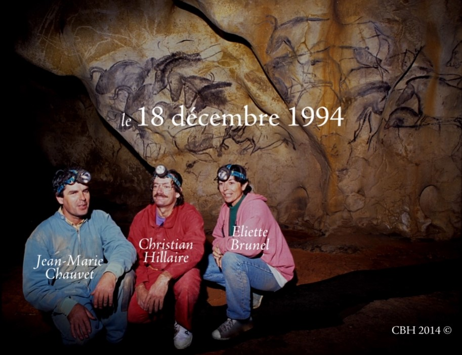
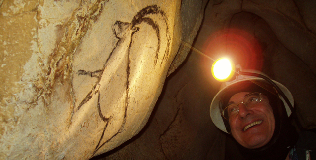
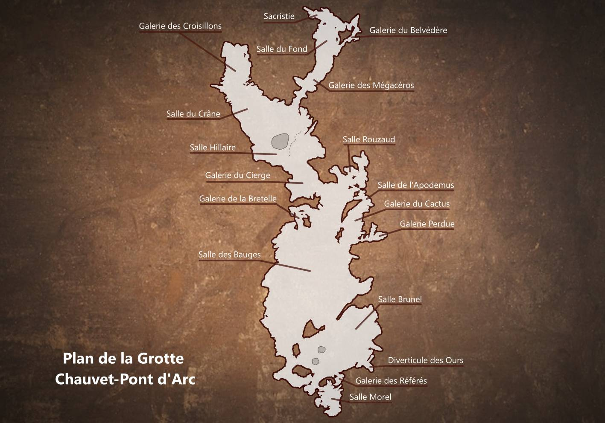
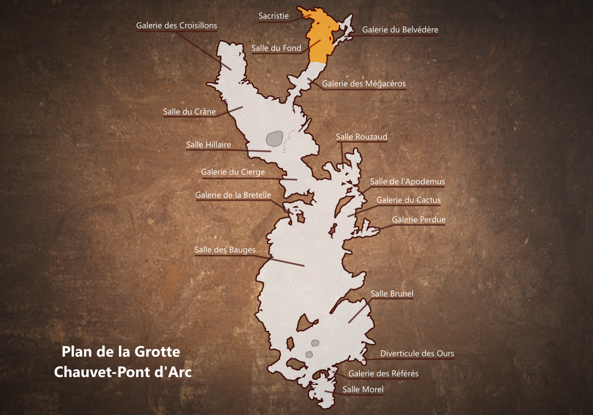
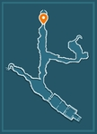

Collection Grand sites archéologiques
La grotte de Chauvet-Pont-d’Arc
18 Décembre 1994
Ardèche Méridionale, région Auvergne-Rhône-Alpes, France.
La grotte de Chauvet-Pont d’Arc est découverte le 18 Décembre 1994 par Jean-Marie Chauvet, Eliette Brunel et Christian Hillaire à l’occasion d’une exploration spéléologique privée. C’est l’une des plus anciennes grottes paléolithiques ornées du monde.
L’entrée préhistorique de la grotte était située à un point stratégique dans le paysage. Elle était positionnée en balcon au-dessus de la Combe d’Arc. La grotte était un véritable trait d’union entre la vallée et le plateau, offrant une circulation plus aisée que dans les gorges de la vallée.
De nombreux animaux étaient présents dans la grotte: lions, ours, mammouths, rhinocéros, chevaux, bisons, aurochs, bouquetins, cerfs, boeufs musqués, et même hibou ce qui est très rare pour la préhistoire.
Depuis 1998, la grotte fait l’objet de recherches menées par une équipe pluridisciplinaire de neuf membres, composée d’archéologues du Conseil National de la recherche archéologique et des deux professeurs étrangers: un allemand et un espagnol.
Cette équipe retenue en 1996 a été réunie par Jean Clottes qui la dirigea jusqu’en 2002, passant le relais à Jean-Michel Geneste qui laissa ensuite place à Carole Fritz en 2018.
Dans une volonté d’éviter de refaire les mêmes erreurs que lors de la découverte de Lascaux (dont les divers allées et venues des visiteurs avaient dégradé les peintures s’y trouvant), de nouveaux modes de recherches non invasifs ont été mis en place. Ainsi, les recherches s’organisent en deux campagnes annuelles, durant les périodes de l’année où la présence humaine est bien supportée par la cavité. Afin de garder l’intégrité des sols vierges, les travaux scientifiques sont menés à partir de passerelles dont le tracé reprend l’essentiel du parcours initial des découvreurs. Des passerelles temporaires peuvent toutefois être installées après analyse de leur impact potentiel sur la cavité.

Le Plan de la Grotte
La Salle du Fond
Au débouché de la galerie des Mégacéros, la salle du Fond occupe un vaste espace en contrebas, au sol argileux parsemé de bauges à ours. Les Aurignaciens l’ont entiérement explorée, jusqu’aux moindres recoins. S’ils ont dessiné quelques images sur la paroi droite, c’est cependant la paroi gauche qui présente l’essentiel des oeuvres d’art. En majorité, elles sont groupées de part et d’autre d’une concavité, en deux volets spectaculaires (le Grand Panneau), d’autres sont dispersées sur la paroi et les reliefs.
Les Bisons du Pilier
La partie la plus profonde de la salle du Fond est marquée par la présence d’un grand pilier rocheux détaché des parois. Ce support remarquable est occupé par deux bisons croisés, dessinés en noir et rehaussés de gravure. Sur le bison supérieur, on note deux versions du corps, la plus longue paraissant démesurée. Le bison du bas, moins détaillé, est partiellement effacé par le passage des ours des cavernes. Sur le panneau, on note aussi des gravures en tirets alignés formant un signe de type original et l’esquisse d’une tête de mammouth en gravure.
Trois, quatre ou cinq lions
Situé dans le prolongement du panneau du rhinocéros crachant, et juste derrière le Pendant de la Vénus, un pendant de roche, horizontal et incurvé, recèle cinq animaux présents dans une composition bien délimitée. On y trouve avant tout un groupe de dessins de félins imbriqués les uns dans les autres.
Le Cheval du Passage
Derrière le Pendant des Trois Lions et à gauche du Pilier aux Bisons, un couloir communique avec la Sacristie, l’une des dernières salles de la grotte. Lorsqu’on se trouve face aux bisons, on remarque l’avant-train d’un cheval tourné vers la gauche, comme s’il entrait dans la Salle du Fond. Ce cheval, exécuté à l’estompe et rehaussé de gravures, est complet. Son style présente des similitudes étroites avec certains chevaux de la grotte, notamment ceux du Secteur des Chevaux.
Le Pendant de la Vénus
Dans la partie profonde de la Salle du Fond, les voûtes sont trop hautes pour être accessibles, exception faite d’un pendant calcaire, véritable barre rocheuse descendante du plafond pour se terminer en pointe à environ 1m10 du sol. A l’Aurignacien, il y occupait une position particulière car toute personne progressant dans la salle y arrivait directement. Sa forme et sa situation lui ont peut-être valu d’être orné d’un motif au sens très marqué. La moitié des oeuvres n’y ont été découvertes qu’en 2000, dans le cadre d’une prospection systématique des parois inaccessibles au regard.
Rhinocéros crachant
Les deux lions sont situés à 1m40 du sol sur une portion régulière de la paroi proche d’une grande concavité. Les félins, dessinés au fusain et à l’estompe sur une surface préalablement raclée, sont superposés à un animal d’espèce indéterminée, tourné à droite et pourvu d’une longue patte effilée. Au-dessus des lions, à plus de 2m de haut, un rhinocéros au trait noir est marqué de rouge au niveau de la bouche, de la corne, la joue et sur le corps. L’animal paraît blessé, peut-être agonisant et crachant du sang.
Le Bison sur l'angle
A droite du Panneau des Lions, un bison noir a été placé sur le bord d’une grande cavité. La tête vue de face et le corps sont peints sur deux plans perpendiculaires. De cette manière, l’artiste réussit à créer l’illusion d’une oeuvre en trois dimensions, l’animal paraissant suivre le spectateur du regard.
Le Grand Panneau des Lions
La partie droite du Grand Panneau est la plus spectaculaire de la grotte. Une véritable scène en occupe l’essentiel: un fort groupe de lions, mâles et femelles, chasse quatre bisons qui occupent la partie gauche du panneau, au contact des quatres têtes de bisons en colonne. Un petit rhinocéros a été dessiné au bas de la scène. La paroi a parfois été préparée par un raclage adapté au sujet à dessiner aux contours souvent détourés. La répétition des conventions et des techniques, comme l’unité de la scène plaident en faveur d’une réalisation de ce panneau en un temps limité.
Trois petits Mammouths
A droite de l'alcôve du Cheval et avant le relief rocheux qui porte les quatre têtes de bisons superposées, trois mammouths tournés à gauche ont été dessinés au-dessous du bison qui sort de la paroi, tout en haut d’un petit panneau latéral à la niche centrale. D’après les superpositions, une première esquisse assez fruste de mammouth (relief prononcé du crâne, trompe et ligne de dos) a été suivie d’une autre de même nature, puis du dessin détaillé d’une mammouth jeune, dégingandé, aux grosses pattes en boule.
Quatre têtes de Bisons en Colonne
Cadrées l’une au-dessous de l’autre, sur l’angle de la paroi qui marque le début du grand panneau des Lions, quatre têtes de bisons nous font face. Elles ont été dessinées en fonction du relief, une corne de chaque côté. Les yeux sont bien marqués par des points noirs parfois cernés de blanc. Le chignon est épais. Le modelé de la tête est indiqué par l’usage répété de l’estompe. Quelques traits latéraux peuvent esquisser des contours corporels. L’impression ressentie est celle d’un groupe de bisons vus de haut.
Alcôve du Cheval
A peu près au milieu de la paroi gauche, dans sa partie profonde où elle se déploie en un grand panneau, une petite alcôve a certainement joué un rôle important dans les croyances et la manière d’appréhender la caverne par les Aurignaciens, en raison de sa morphologie et de sa position centrale. Sa surface a été raclée pour préparer la paroi du dessin d’un cheval. Celui-ci a finalement été tracé sur son bord droit, de sorte que lorsque l’on est en face, on a l’impression qu’il sort de la roche.
Panneau des Rhinocéros
A hauteur du dernier palier de la Salle du Fond, paroi gauche, le premier volet en forme de dièdre de la grande fresque finale se partage en deux thématiques différentes. Le pan de droite renferme une douzaine de rhinocéros majoritairement tournés à gauche. Ils se superposent, se masquent ou se recouvrent comme pour évoquer la représentation d’un troupeau. Les techniques mixtes (fusain et gravure) sont largement employées pour faire ressortir les silhouettes et certains détails.
Le Rhinocéros et les Félins
La première partie de la paroi gauche de sa Salle du Fond s’achève sur un long panneau regroupant trois félins imbriqués et deux rhinocéros. Les félins reprennent le même jeu de couleurs et de composition que le Panneau des Trois Lions qui les précèdent. Des deux rhinocéros, un est complet et l’autre évoqué d’une simple gravure de cornes démesurées. Le premier rappelle celui de l’entrée de la salle, associant dessin, estompe et détourage à la gravure. La paroi est abondamment lacérée de griffades d’ours.
Les Griffades d'ours
Surtout dans les parties profondes de la cavité, des pans entiers de parois ont été lacérés par des “griffades”, et ce jusqu’à près de 3m de hauteur, ce qui correspond à la taille des plus grands ours dressés sur leurs pattes arrière. Lorsqu’elles affectent des parois ornées, elles permettent d’établir une chronologie relative, certaines se trouvant dessous ou sur des gravures ou des peintures préhistoriques.
Les Trois Lions
Sur le premier palier de la Salle du Fond, sur la paroi gauche, la surface irrégulière du calcaire n’a pas empêché la mise en place de trois profils droits de lions des cavernes imbriqués, dont deux mâles (scrotum). Deux sont tracés au fusain et un, limité à la ligne de dos, est dessiné en rouge. On constate que les mâles n’arboraient pas de crinière. De nombreuses griffades d’ours précèdent ou se superposent aux dessins. Les gravures de deux mammouths se lisent plus haut et recoupent les dos des félins.
Le Panneau de la Paroi Droite
Ce panneau est le plus important, en taille et en densité de figures, de la paroi droite. Visible au-dessus de l’entrée surbaissée de la galerie basse qui mène au Belvédère, cette belle composition est sub-verticale. Neuf figures, gravées et/ou dessinées en noir, ont été identifiées: trois félins, deux rhinocéros, un ours, un animal indéterminé, une signe vulvaire. Elles se superposent ou sont (plus rarement) recoupées par des griffades d’ours. Il s’y ajoute des traces de doigts et des mouchages de torche.
La Galerie du Belvédère
La fréquentation de la galerie du Belvédère est sportive. On y pénètre en rampant sous un pendant rocheux. Dès ce passage franchi, un quadrupède, un signe en gerbe, et un dos de mammouth ont été incisés sur la paroi, en quelques traits sommaires. La progression devient plus difficile. Il faut franchir un très étroit couloir, puis une verticale de 4m à descendre en opposition, puis de nouveau une série d’étroitures n’ayant parfois pas plus de 30cm de large, et enfin, se hisser sur un petit surplomb.
La Sacristie
La Sacristie est la salle ornée la plus loin de l'entrée de la cavité. C'est une courte galerie adjacente d'accès aisé. Le sol, très fragile, est couvert d'empreintes animales. Cette galerie est connue depuis la découverte de la grotte. Dans l'hypothèse d'un dispositif d'art pariétal qui serait structuré en allant du fond de la grotte vers l'entrée, les oeuvres de la Sacristie pourraient être à la source de la construction symbolique.